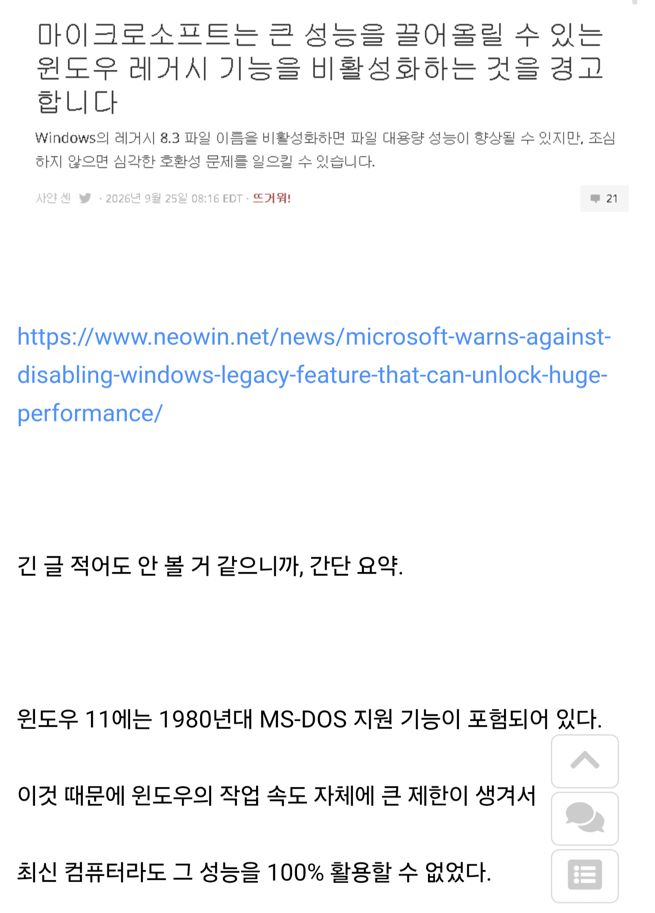
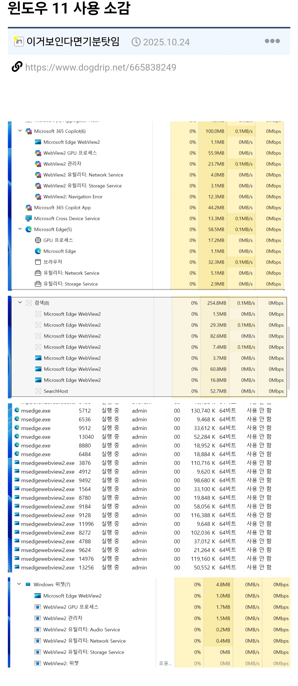

마소 씹년들이 지들이쳐만들어놓은 좆같은 웹뷰만 치워도
당장 성능향상 이득 오지게가져다주는데
막말로 윈11보다 윈10이 더빠르다는거 100%성능안바람 윈10도 충분히 날라다니고 가벼워, 팬4도 굴러가는 os이면 말다한거야.
레거시치워서 성능향상 얻는거보다 지들이쌓아놓은 새로운 똥치워몰는게 더 효율적인걸 몰라. 와중 새로 좆같은거 득지득지 때려쳐박아놓고 안정성 더 개판나고 메모리 , 시퓨점유율 백그라운드 누수 오지게쳐먹는다는거. 저런핑계댈동안 윈10때 저정도만큼 불만 나왔냐?ㅋㅋㅋㅋ Xp에서 비스타망한이후에도 7나올때는 개발실력빨로 승부봤지
죄다 11관련한오류 웹뷰관련한 충돌과 불안정함뿐
집안 덥다고 집안에 쌓아놓은 잡동사니 창문가린거 안치우고
집안통째로 벽까지뜯어서 개방시켰다고 와 시원하네 하는꼴
디자이너들의 목소리가 커지다가 기술자들이 디자이너의 따까리가 되면 벌어지는 현상